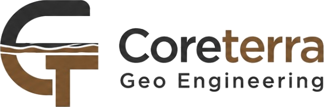

Menembus Batas Bumi, Membangun Kepastian Eksekusi.
PT Coreterra Geo Engineering adalah ujung tombak di sektor rekayasa geoteknik, pengeboran (*core drilling*), dan survei geofisika. Kami hadir untuk mendisrupsi industri infrastruktur dan eksplorasi sumber daya alam melalui presisi data bawah permukaan yang tak tertandingi.
Selama ini, pasar terjebak pada layanan geoteknik konvensional yang lambat, rentan *cost-overrun*, dan memiliki visibilitas data yang minim. Akibatnya, banyak mega-proyek mengalami keterlambatan fatal akibat salah perhitungan kondisi tanah. Coreterra memecahkan masalah ini dengan pendekatan *hybrid*: memadukan eksekusi lapangan yang presisi—seperti mobilisasi 5 *drilling rig* secara serentak—dengan kontrol manajemen proyek terintegrasi Cloud ERP, memberikan transparansi biaya dan progres secara *real-time* kepada *stakeholder*.
Traksi bisnis kami saat ini membuktikan validitas solusi kami. Sepanjang Kuartal III 2026, kami mencatatkan total *inflow revenue* sebesar Rp 1,47 Miliar dengan *backlog pipeline* berjalan senilai Rp 2,07 Miliar, serta mempertahankan tingkat gagal bayar di angka absolut 0,0%.
Menyediakan intelijen geoteknik dan eksekusi pengeboran berstandar global untuk meminimalkan risiko infrastruktur secara presisi, aman, dan efisien.
Zero-Default Financial Integrity dipadukan dengan Agile Rig Mobilization. Kami memberikan data sub-permukaan tercepat dengan struktur biaya paling transparan.
Berawal dari eksekusi survei geolistrik berskala menengah, PT Coreterra Geo Engineering telah bertransformasi menjadi kontraktor geoteknik *full-stack* yang dipercaya menangani pengeboran fondasi dalam dan eksplorasi *limestone*.
Visi 10 tahun kami adalah berevolusi dari kontraktor spesialis menjadi "Data-Driven Geo-Intelligence Company" yang memiliki pemetaan prediktif sub-permukaan terlengkap di Indonesia.
Keakuratan data log bor dan survei geofisika (magnetik/geolistrik) adalah nyawa layanan kami. Kami tidak mentolerir deviasi data.
OPEX kami hanya 1,3% dari total revenue. Kami fokus 98,7% pada eksekusi lapangan (COGS). Tanpa birokrasi, rig bergerak lebih cepat.
Integritas struktural untuk klien dan integritas finansial (zero bank debt) untuk perusahaan. Keamanan kru dan kebebasan utang adalah fundamental.
Industri konstruksi dan pertambangan di Indonesia kehilangan triliunan rupiah setiap tahunnya akibat kegagalan eksekusi sub-kontraktor di tahap awal (fondasi & survei). Terdapat tiga akar masalah utama:
Banyak proyek mengandalkan data geologi minim atau usang, menyebabkan desain *borpile* *over-engineered* atau rentan gagal struktur.
Bukti Data: Menyumbang >35% cost overrun di mega proyek infrastruktur sipil.
Pasar didominasi pemain lama yang lamban mengirim *drilling rig* ke pelosok, memicu *downtime* berminggu-minggu.
Bukti Data: Memakan biaya burn-rate raksasa bagi Main-Con dan penalti liquidated damages.
Ekosistem sangat rentan *cash-flow mismatch*. Vendor sering kehabisan napas membiayai operasi sebelum *invoice* termin awal cair.
Bukti Data: Kematian proyek di Fase Awal dan hilangnya kepercayaan klien.
Kami tidak sekadar menyediakan alat bor; kami memberikan "Kepastian Rekayasa". Coreterra menghadirkan ekosistem terpadu untuk memangkas hambatan klien di lapangan.
Metodologi: Pengerahan formasi *Multi-Rig* secara serentak (contoh nyata: mobilisasi 5 rig simultan) didukung suplai logistik rebar terpusat tanpa utang.
Manfaat Klien: Memangkas timeline pekerjaan fondasi secara masif dan mempercepat serah terima fase pertama proyek hingga 40%.
Metodologi: Pemetaan bawah permukaan non-destruktif menggunakan magnetometer mutakhir untuk menghasilkan model litologi 2D/3D yang sangat akurat.
Manfaat Klien: Menghindari titik bor buta, menghemat miliaran rupiah dari potensi kesalahan desain tambang atau fondasi bendungan.
Metodologi: Seluruh pengeluaran (BBM, material, upah) dan progres titik bor dilaporkan harian (*Daily Progress Report*) via Cloud ERP CoreTerra.
Manfaat Klien: Visibilitas 100%, memangkas proses approval dan invoicing termin penagihan hingga 30% lebih cepat tanpa sengketa (*dispute-free*).
Pasar layanan geoteknik dan pengeboran di Indonesia berada pada fase hyper-growth, didorong oleh masifnya mega-proyek bendungan, hilirisasi tambang nikel/emas, infrastruktur jalan tol, dan pembangkit listrik energi terbarukan (PLTM/PLTA).
Total pengeluaran nasional tahunan untuk *ground engineering*, konstruksi fondasi, dan pemetaan sumber daya alam di seluruh Indonesia.
Porsi spesifik pengeboran tambang, survei geofisika, dan borpile skala menengah-besar di wilayah Sumatera & Jawa.
Target penguasaan kontrak riil PT Coreterra Geo Engineering secara realistis dalam 36 bulan (3 Tahun) ke depan.
PT Solusi Monitoring Indonesia
Rp 2,07 Miliar
Proyek fondasi *borpile* IKPT adalah demonstrasi sempurna kekuatan manuver Agile Drilling kami. Dalam mengejar tenggat waktu yang sangat agresif, kami mengeksekusi strategi logistik tingkat tinggi:
Model bisnis Coreterra dirancang sangat resilient dengan perputaran kas (*Cash Conversion Cycle*) yang terstruktur melalui 3 pilar pendapatan:
B2B Project-Based dengan skema termin (*progress billing*). Memberikan aliran kas bervolume raksasa yang dieksekusi mengandalkan surplus modal kerja awal.
Siklus proyek amat pendek yang memberikan margin keuntungan bersih amat tinggi (hingga +43%) karena rendahnya risiko belanja material pakai-habis (*consumables*).
Kontrak borongan meteran yang menjamin setiap penetrasi mata bor ke bumi terkonversi mutlak menjadi revenue.
Kami tidak sekadar beroperasi; kami mengendalikan efisiensi rantai pasok secara total, menciptakan benteng bisnis (*Moat*) yang mustahil ditiru pemain konvensional.
Pasar geoteknik Indonesia terjebak pada ekstremitas. Coreterra memecah kebuntuan tersebut dengan mendefinisikan standar kelincahan baru (The Hybrid Approach).
Memiliki armada raksasa, namun lumpuh oleh birokrasi berjenjang. Mereka membebankan komponen overhead (OPEX) kantor pusat yang amat besar ke dalam harga tender (RAB). Sangat lamban memobilisasi alat dan kemahalan untuk proyek siklus menengah.
Menawarkan harga *dumping* yang murah, namun mengorbankan segalanya: nihil kepatuhan manajemen K3 (HSE), log pelaporan geologi berantakan, dan modal kerja sangat tipis sehingga proyek sering diterbengkalaikan jika penagihan termin sedikit macet.
Kami satu dari segelintir kontraktor yang berlari di atas ERP proprietari independen. Klien menerima jaminan transparansi pengeluaran (*cost*) dan *daily progress* secara absolut.
Bantalan surplus kas positif dan *Zero Bank Debt* memastikan alat berat, kru bor, dan suplai besi terbayar lunas tepat waktu. Kami tidak pernah mogok di tengah pengeboran.
Menawarkan kelincahan eksekusi alat dan harga seefisien vendor lokal, namun dipadukan dengan presisi tata kelola dan validitas pelaporan setara firma konsultan internasional.
Kesehatan finansial Coreterra menunjukkan fundamental luar biasa dengan fokus mutlak pada perputaran kas organik yang positif tanpa menggunakan instrumen utang perbankan (*Zero Leverage*).
| Indikator | Capaian |
|---|---|
| Revenue Generation (YTD) | Rp 1.470.289.340 |
| Net Cash Margin (Surplus) | + Rp 77.680.322 |
| Rasio Beban Operasional (OPEX) | 1,3% (Sangat Efisien) |
| Tingkat Piutang Macet (Bad Debt) | 0,0% (Zero Default) |
| Current Backlog Pipeline | Rp 2.070.000.000 |
Memproyeksikan pertumbuhan pendapatan agregat sebesar 300% (YoY) seiring manuver strategis transisi kapasitas operasional dari armada 5 unit rig menjadi 15 unit rig pengeboran aktif simultan.
Menargetkan ekuilibrium margin profitabilitas tinggi secara berkesinambungan yang didorong oleh ekspansi layanan survei geofisika murni (rendah *consumables*).
Struktur disiplin modal kerja ERP menjamin payback period investasi dalam siklus 18-24 bulan berkat perputaran termin tagihan infrastruktur yang sistematis dan terlindungi.
Akuisisi aset 10 unit mesin drilling rig spesifikasi medium-deep (200-500m) & mud pump untuk mendominasi hilirisasi nikel/emas di Sulawesi & Maluku.
Injeksi modal pada instrumen georadar (GPR) dan downhole logger berspesifikasi mutakhir guna memperluas penetrasi ke sektor BUMN Migas.
Komersialisasi lisensi data turunan geologi (Big Data) dari database pengeboran historis kepada pihak ketiga (*developer* & perencana tata kota).
Untuk mengamankan monopoli market share dan mengeksekusi backlog kontrak yang membengkak, Coreterra mengundang investasi ekuitas strategis (*Private Equity / VC*).
Akuisisi Heavy Machinery (Rig & Magnetometer) guna melenyapkan ketergantungan sewa pada sub-vendor, mendongkrak margin profit bersih tambahan hingga 15%.
Likuiditas operasional mutlak untuk membiayai *upah bor* dan mobilisasi 3 proyek raksasa serentak tanpa tersandera keterlambatan pencairan termin dari Main-Con.
Peningkatan kapabilitas lisensi Enterprise ERP, sertifikasi ahli K3 Geoteknik nasional, dan alokasi lobi tender EPC skala mega-proyek.
Risiko kegagalan fondasi dan melesetnya akurasi eksplorasi bernilai triliunan rupiah. Bermitralah dengan PT Coreterra Geo Engineering; tempat di mana sains geologi, disiplin eksekusi operasional, dan data presisi menyatu menjadi kepastian.
Jadwalkan Pertemuan Teknis & Pitching Eksklusif: